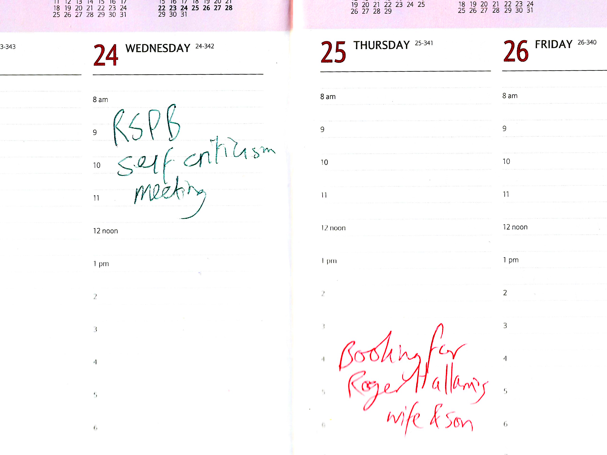
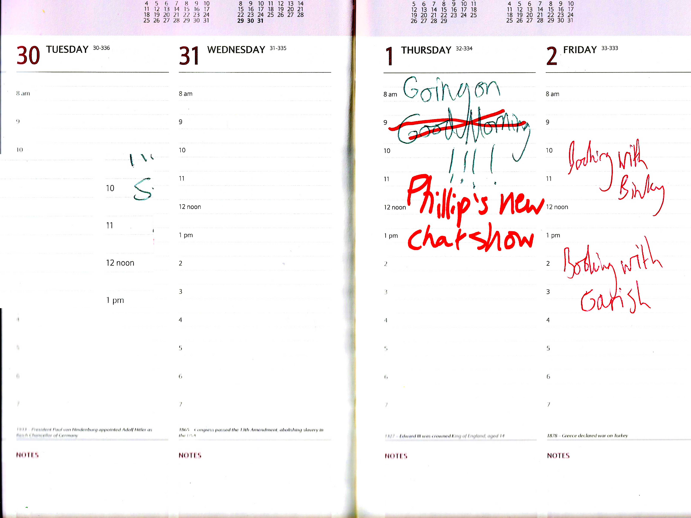
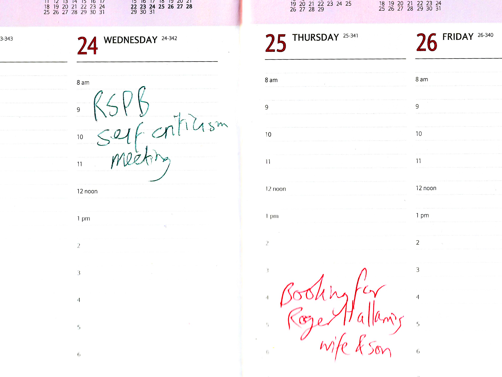
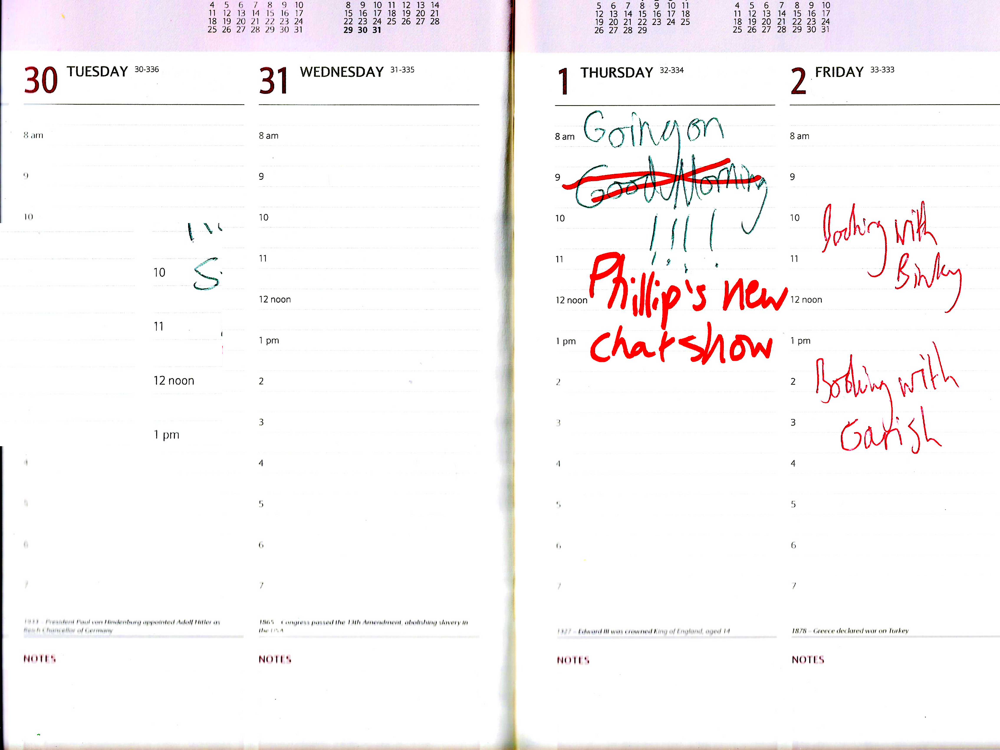
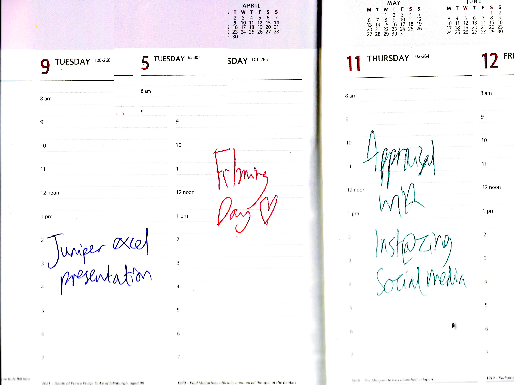
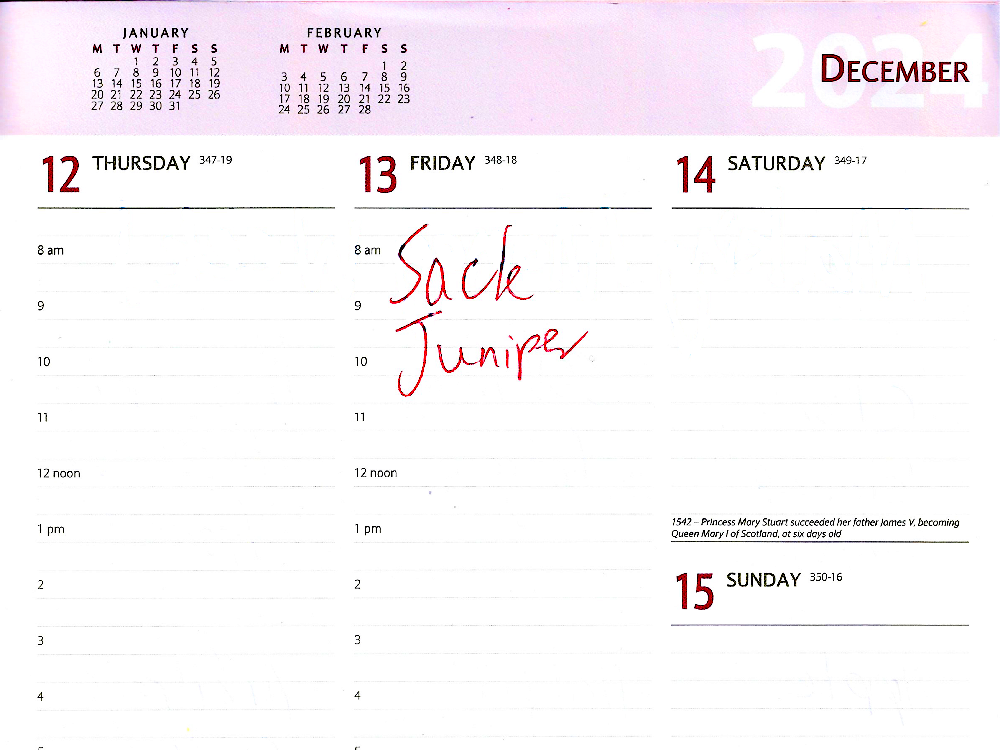
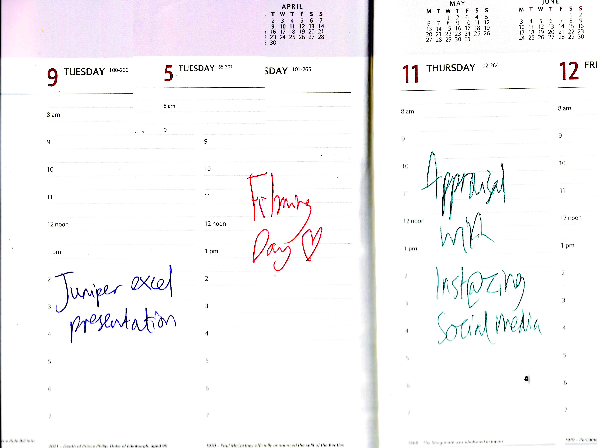
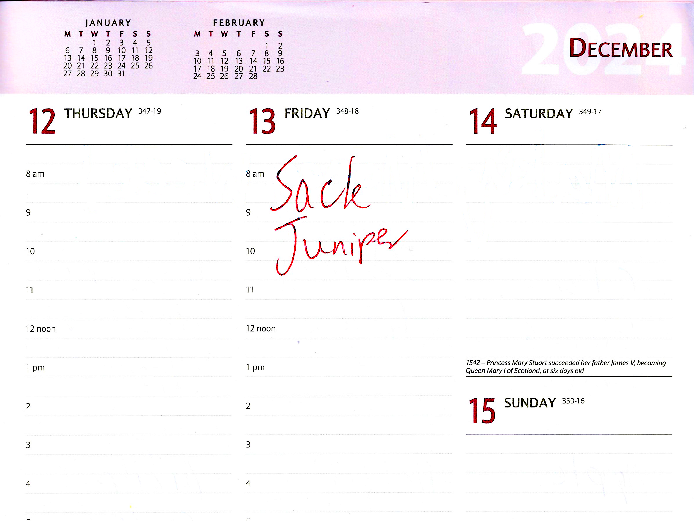

 




K&T Tilts 2024 Diary
I got this diary from my last job. K&T Tilts were in a neighbouring unit in the industrial park. A tilt is a tarpaulin, the sort you would use for a haulage truck, or apparently for circus tents. They were getting rid of these diaries, and I nabbed one. It captivated me on two levels. Firstly, there’s an incredible amount of information in its first 30 or so pages. Unit conversions, time zones, travel times between locations, an assortment of facts one might want close to hand. Secondly, frankly, I was baffled by it as a viable business expense. I don’t know if the photo quite communicates how fancy this diary is. It’s an elegant and functional object from a bygone era, and yet there it is, emblazoned on the front, in gold; ‘2024’.
Diaries are where you keep a record of what stuff will happen. It’s sort of a written premonition.
I used this diary to tell a story about a company, one that opens at the beginning of the year, but has fallen apart by the end. There are some ups; they book clients, film social media content, and hire an employee called Juniper. They even get to go on QVC. But ultimately things go wrong quite quickly, because people stop paying for their product or service. But before that, lots of events do take place, and they are listed here in this peculiar object that I got before a job I had went wrong too.